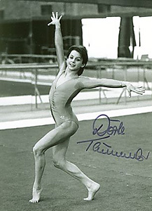

Dorte Thümmler (GDR)
1988 Olympic Silver AA Medalist

Medal Total
Olympic
Games:
1 Bronze
World Championships: 1 Gold, 1 Bronze
European Championships:
1 Bronze
Dorte was born on October 29, 1971, in Berlin. She trained at SC Dynamo Berlin under Jurgen Heritz (coach of Maxi Gnauck and Karin Janz).
Competition Results
1985
Jr. Friendship Tournament (Druzhba): 48th AA
1986
Cottbus International: 2nd UB
Jr. European Championships: 16th AA
Jr. Friendship Tournament (Druzhba): 4th Team, 9th AA, 3rd FX, 6th V, 6th UB
Jr. GDR-USSR Dual Meet: 6th AA
1987
Chunichi Cup: 3rd AA, 1st UB, 1st FX, 5th B
Cottbus International: 7th AA, 2nd UB, 5th FX
DTV Cup: 3rd AA
European Championships: 15th AA, 3rd UB
GDR Championships: 6th AA, 1st UB
HOL-HUN-GDR Meet: 1st Team, 1st AA
Tokyo Cup: 3rd UB, 4th FX
World Championships: 3rd Team, 6th AA, 1st UB,
5th FX
1988
Cottbus International: 6th AA, 1st UB, 1st B
GDR Championships: 2nd AA, 1st B, 1st FX, 2nd UB, 5th V
Olympics: 3rd Team, 7th AA, 4th UB, 8th FX
This page was created on April 14, 2000
and was last updated on August 25, 2007.
© Gymn Forum